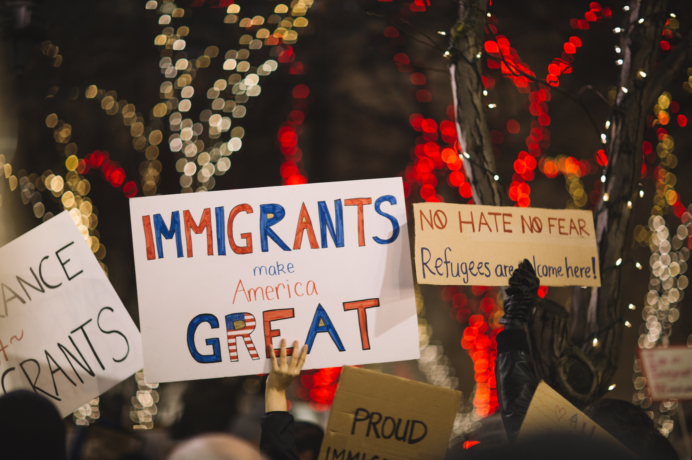
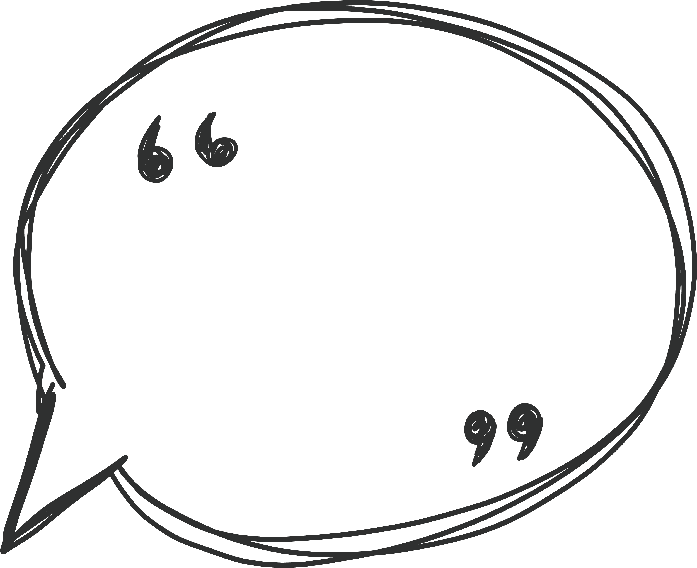

For many people, 2016 was suppose to be the year of women, we would elect the first-ever female president and finally breakthrough the ultimate glass-ceiling! Unfortunately, 2016 didn’t turn out the way so many of us had hoped it would. Millions of Americans were left feeling hopeless and overwhelmed over the results of the election. However, the 2016 presidential election wasn’t a complete disappointment. Through the outrage and backlash of the election results a fire was ignited, a pivotal shift in attitude helped to shape what would become the Year of the Woman! Both women and men from around the world united together to revive the gender equality movement by organizing the largest march ever documented the day after President Donald Trump was inaugurated. This 2017 revival was the turning point for the gender equality movement because not only were women banding together, but they began to fight back! They became more engaged, energized and resolute than ever before. Issues that had been long ignored were coming to the surface and women were beginning to speak up and use their voices to influence and demand real change be made!
Below is a short snippet of some of the most memorable moments:
Donald Trump is inaugurated as the 45th President of The United States of America. 
24 hours after Donald Trump is elected President of The United States of America, millions of people from around the world congregated to march in support of equality for all. The Women's March movement is aimed at dismantling systems of oppression for various minority groups such as Women's Rights, Immigrant Rights, LGBTQIA rights, etc. The Women's March in 2017 was the largest coordinated protest in U.S. history and one of the largest in world history.
When Senate Republicans tried to quiet Sen. Elizabeth Warren (D-Mass.) during a long critique criticizing Donald Trump's nominee for attorney general, Sen. Jeff Sessions, Warren refused to be quiet. Her tenacity and refusal to comply prompted Senate Majority Leader Mitch McConnell’s comment: “She was warned. She was given an explanation. Nevertheless, she persisted,” which inadvertently set off a viral meme of feminist resistance.
After experiencing sexual harrassment and gender inequality in the workplace, former engineer Susan Fowler writes a blog post about the experiences and struggles she faced while working at Uber. She recounts the implicit lack of response or help she recieved from HR, as well as the blatant injustice she dealt with on a daily basis. This post inadvertently unmasked many of the challenges women are faced with when working in the tech industry due to its highly male dominated nature.
A memo written by a Google senior engineer that discussed what he believed to be the company’s “ideological echo chamber” specifically in regards to gender differences gets published and goes viral. He is fired by Google, however the memo sparks outrage across the country.
Actress Alyssa Milano sparks a movement with a hashtag on Facebook and Twitter. The #metoo movement encourages both women and men to share their stories of workplace harassment in hopes of shedding light on the signifance of the problem across all industries.
If you’ve been sexually harassed or assaulted write ‘me too’ as a reply to this tweet. pic.twitter.com/k2oeCiUf9n
#TIMESUP movement was launched by women in the entertainment industry as a unified call for change for women across all industries. TIME’S UP focuses on the systemic inequality and injustices in the workplace that have kept underrepresented groups from reaching their full potential. During the award's season for the entertainment industry, many women wore white roses and black outfits in support of the #TIMESUP movement.
From the over seven millions individuals around the world who participated in the Women's March to the thousands of survivors who bravely shared their stories of sexual harassment and assault in the #MeToo movement on social media, it was evident that women were no longer going to stay silent anymore. On the contrary, they would speak out as frequently and as loudly as they possibly could. There is no doubt that the female revolution has begun, more and more women are identifying themselves as feminist each day. For decades, women from all over have joined together to fight for the same rights and opportunities as their male counterparts. Unfortunately, gender inequality still exists both nationally and globally despite many substantial national and international measures that have been made towards creating a more gender equal world. So, what made 2017 such an impactful year for gender equality? What has changed? How has the mindset shifted? In an interview done by CNN, Senator Kirsten Gillibrand answers some of those questions by saying, "one of the only silver linings of the Trump presidency is that more and more women are feeling emboldened to raise their voices and fight for the issues that matter most to them, from sexual harassment in the workplace to paid leave. We saw that with the Women's March, and we saw it again on Election Day last month, when women all over the country got off the sidelines, ran for office, and won." There is no doubt about the strides women have taken over the past year, but I wanted to know if these big movements have affected the average woman and their communities. Thus, I decided to sit down and talk to two women about their views and thoughts about this past year.
The first women I had the opportunity to interview was Angela Dickerson, a local attorney and single mother. We discussed her thoughts over the last year and how they have impacted her both personally and professionally. A very outspoken advocate for gender equality and the LGBTQ community, Angela says the 2016 election served as a wake-up call for her, as well as many other Americans. She goes on to say, “to witness a man who has explicitly demeaned women numerous times be elected president of this great nation, not only tells women in this country that we don’t deserve the same respect as men, but also that it is okay to say demoralizing and derogatory comments without any repercussions.” As a mother to a freshman in high school, Angela has been very proactive in exposing and educating her daughter on gender equality and how she can take steps within local government to fight against injustice. She says that her and her daughter both attend marches and speeches for gender equality and LGBTQ rights regularly. Angela urges other mothers and adults involved in shaping young adults to “fight for the future generations, instill in them that they must fight for what they believe they believe is right and just.” She continues by saying, “The unification of women across the world during the Women’s March and #metoo movement reminds me that I am fighting for the equality of all minority groups, I want to show my daughter that she can grow up in a world where men, women, LGBTQ and racial minorities are all equals.” She adds that since the Women’s March last January, she has seen multiple women’s advocacy groups within her community, as well as professional meetups.

To watch my 14 year old daughter get involved in marches and advocate for equality among all is one of the most rewarding feelings as a mom! - Angela Dickerson
If this past year taught us anything it was how demoralizing and unfair it can be to be a woman in the tech industry. Both the Google memo and Uber blog gave individuals insight into the sexism and inequality women in those fields face on a daily basis. Many brave women also shared their own personal narratives about the deep-rooted bias and sexism that continues to plague many companies. In addition to dealing with sexual harassment, women are characteristically underpaid for their work, as well as face many disadvantages in the hiring process and throughout their careers, i.e. promotions. I sat down to talk to with Rachel Banuelos about her experiences in the tech field. Prior to working for the Spurs Sports and Entertainment, Rachel recounts many doors being slammed in her face when trying to move up within her last company. As an experienced front-end developer, Rachel was looking to be promoted to lead developer when a colleague left the company, however she was told that her male colleague would be given the job despite his lack of experience. This is when she said she decided to leave an environment that valued her based on her gender, not her capabilities. Since then, Rachel has been proactive in instituting gender equality in the workplace by starting a committee at SSE that is focused on ensuring a positive and healthy work environment for all. “The release of the Uber blog and Google memo portrays the issues we are faced with in the workplace. It has brought these issues to the forefront and caused companies to reassess the work environments they have created.” Rachel says she attends regular women in tech meetups in the San Antonio area as a way to uplift and meet other like-minded women. “This past year has shown me the importance of what it means to be a woman in a predominantly male field.” Although she believes that 2017 has been a turning point for women, primarily professionally she still believes that “this is only the beginning of the fight, we must continue to work together to shed light on the major issues minority groups face in this country to accomplish the end goal.”
Watching women empower other women has been the most uplifting experience. - Rachel Banuelos
It is evident that the events over the past year have inspired action among individuals, but it is our job to continue to ensure that words are not just spoken but acted upon. This is the only way there will be change. Since the 2016 election, like many others, I made it my goal to get involved in speaking up against gender inequality. This past election was the first presidential campaign that I really paid attention to, so it made me aware of some of the real issues we are facing. Martin Luther King Jr. once said, “The ultimate tragedy is not the oppression and cruelty by the bad people but the silence over that by the good people.” I was able to attend my first march this past January, which was one of the best experiences I have ever had. The fellowship and unifying feeling of the crowd was electrifying. To see so many individuals, from all walks of life, come together during such a polarizing time is an incredible thing to witness. Although I am not a videographer, I was able to capture the experience with my GoPro.